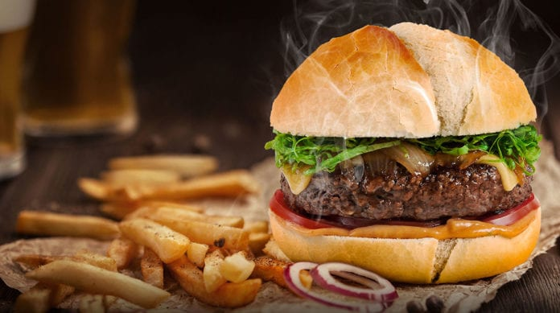
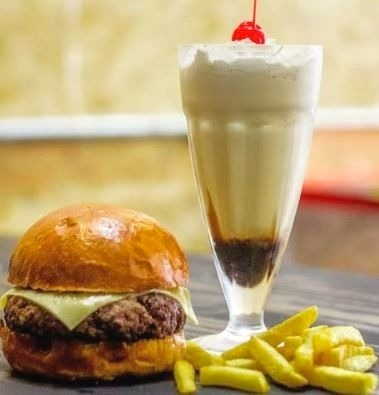

Hamburguer Artesanal
A Juliana's Burgers é uma empresa do ramo alimetício fundada em 2016 por Juliana Machado. Os lanches são feitos com produtos artesanais e de alta qualidade.
Mussum Ipsum, cacilds vidis litro abertis. Não sou faixa preta cumpadi, sou preto inteiris, inteiris. Sapien in monti palavris qui num significa nadis i pareci latim. In elementis mé pra quem é amistosis quis leo. Atirei o pau no gatis, per gatis num morreus. Interagi no mé, cursus quis, vehicula ac nisi. Si u mundo tá muito paradis? Toma um mé que o mundo vai girarzis! Viva Forevis aptent taciti sociosqu ad litora torquent. Praesent vel viverra nisi. Mauris aliquet nunc non turpis scelerisque, eget. Diuretics paradis num copo é motivis de denguis. Copo furadis é disculpa de bebadis, arcu quam euismod magna. Mauris nec dolor in eros commodo tempor. Aenean aliquam molestie leo, vitae iaculis nisl. Todo mundo vê os porris que eu tomo, mas ninguém vê os tombis que eu levo! Nec orci ornare consequat. Praesent lacinia ultrices consectetur. Sed non ipsum felis. Per aumento de cachacis, eu reclamis. Aenean aliquam molestie leo, vitae iaculis nisl. A ordem dos tratores não altera o pão duris. Praesent malesuada urna nisi, quis volutpat erat hendrerit non. Nam vulputate dapibus. Mais vale um bebadis conhecidiss, que um alcoolatra anonimis. Quem num gosta di mim que vai caçá sua turmis! Delegadis gente finis, bibendum egestas augue arcu ut est.

Milkshakes Artesanais